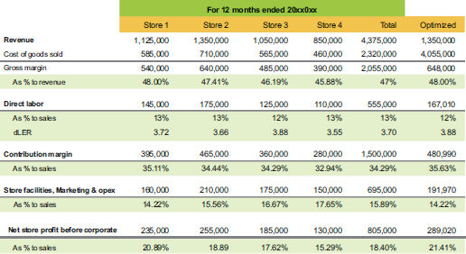

Take note that the store with the most revenue does not have all of the best characteristics. Store 2 produced the largest dollar amount of store profit, but it was not as efficient as Store 1. Store 1 sold at a higher gross margin and had lower operating costs. In retail, it is difficult to match operating expenses by store, but margin output has to compensate for a store that costs more to operate. Store 3 seems to do the best with managing labor, so you would look at what they are doing differently from the other stores.
Based on the P&L, Store 2 would still be the rooster crowing about how good they are, since profit dollars are all that matter. Right? But P&L’s do not tell the whole story—so let’s add the return-on-investment analysis to the bottom for table 9.3 and look at inventory by location and buildout costs by location.